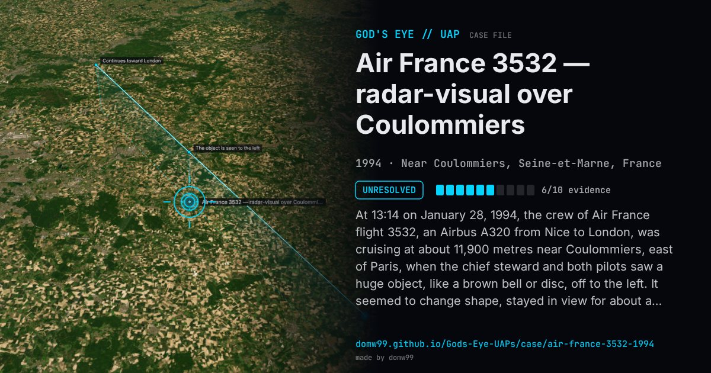

Air France 3532 — radar-visual over Coulommiers

At 13:14 on January 28, 1994, the crew of Air France flight 3532, an Airbus A320 from Nice to London, was cruising at about 11,900 metres near Coulommiers, east of Paris, when the chief steward and both pilots saw a huge object, like a brown bell or disc, off to the left. It seemed to change shape, stayed in view for about a minute and then vanished abruptly. Reims air traffic control had no traffic there, but the military radar at Cinq-Mars-la-Pile recorded a track for about 50 seconds that crossed the airliner’s path and disappeared at the same moment the crew lost sight of the object. The radar return and the crew’s description do not agree on distance or side, which is part of why the case remains open.
Explanation
GEIPAN, the French space agency’s UAP office, classes the case as unexplained after investigation. The military radar track is real but does not match the crew’s account closely: the crew saw a stationary object far off to the left, while the radar target was about a mile to the right and moving. Both vanished at the same moment.
What was seen
Shape: Huge brown or dark-red disc or bell that seemed to change shape
Witnesses: Capt. Jean-Charles Duboc, First Officer Valérie Chauffour and a chief steward
Duration: About one minute
Sources
Browse
- France
- 1990s
- Unresolved
- Radar-visual cases
- Official government documents
- Pilot and aircrew witnesses
- Radar tracking
- Discs and saucers